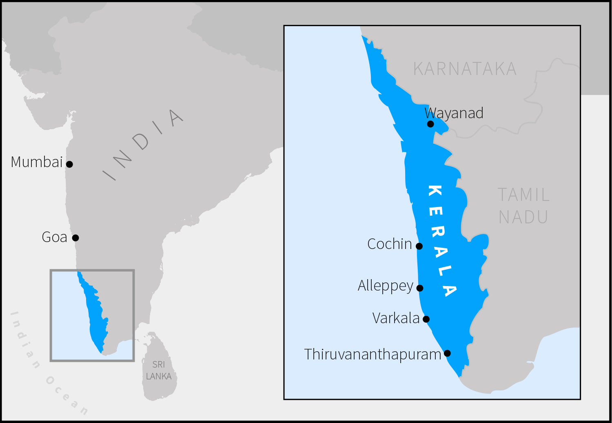
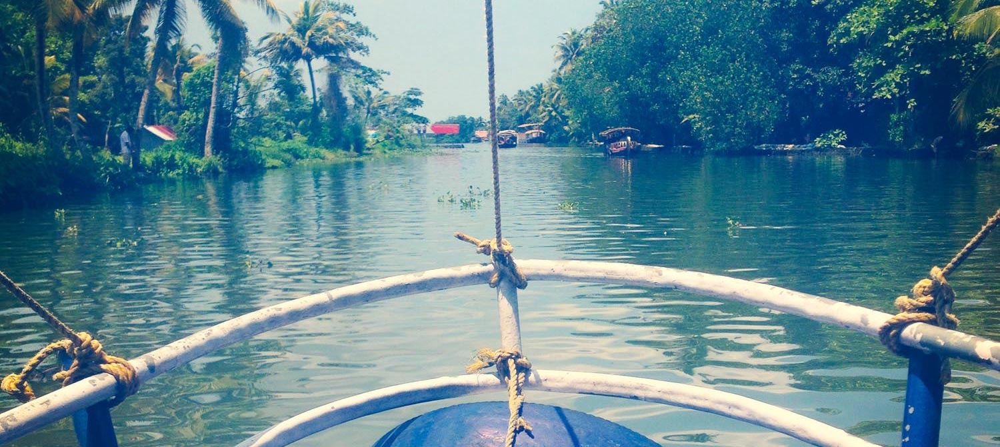

Sunsets & spices: Eating my way around Kerala

Small enough to explore on a two week holiday, yet with a diverse landscape of backwaters, beaches, mountains and tea plantations, Kerala is the perfect destination for India newbies keen on sinking their teeth into the Land of Spices.
"Shanti, shanti," reassured the auto-rickshaw driver as we sped out of Cochin airport, smiling as he swung the tinny yellow taxi, all tassels and psychedelic interior, into the path of an oncoming bus. I held my breath, marvelled at how accurately the movies depict driving in India, and laughed as we swerved to safety – a blur of cows, women in bright saris riding side-saddle on scooters, and stalls selling everything from spices to steel urns, all spinning past.
If there was ever a word to sum up Kerala, it would be "shanti". Meaning peace, the ubiquitous phrase is the perfect reminder that I had left the rat-race behind and it was now time to let go of my uptight ways and relax, Kerala style.
Welcome to God's Own Country, a title locals use with exuberant pride to describe this sliver of land on the south-west coast of India. Goa's laid-back, grown-up big sister is the perfect destination for India first-timers like me, keen on exploring its green hill-stations, palm-lined beaches, and calming backwaters – a chain of brackish lagoons parallel to the coast – as well, of course, as its famous food. Already a convert to Keralan cuisine after dining at Rasa restaurants back in London and Newcastle, I couldn't wait to taste more of the coconut and turmeric typical of the region's food, generally less spicy than that found in northern India.
Fresh fish in Fort Cochin
If you are put off travelling in India by stories of overwhelming whistle-stop tours of the Golden Triangle in the north, Fort Cochin will make a far more soul-soothing start to your adventure on the sub-Continent.
My trip began in late September, before peak season (from November to February) when it is quieter and pretty much everything is cheaper; plus a little of the magical monsoon lingers, giving a break from the glorious hot sunshine. My plan was to nip up north then meander down the coast from Cochin, enjoying backwaters, beaches and biryani on my way.
There are no direct flights from the UK to Cochin, which is roughly in the middle of the state and so a good base from which to get around. I flew the thirteen hours with Qatar Airways from London via Doha. Emirates flies via Dubai, and Air India, Jet Airways and Kingfisher via Delhi or Mumbai. Another good option is to fly into Trivandrum (a large city over-populated with government workers and under-endowed with charm) and then work your way up the coast.
On my first day at Fort House Hotel, a good mid-range guesthouse with spacious rooms grouped around a lantern-filled courtyard garden, I'm offered some solid advice by my 70-year-old German neighbour, an India aficionado: "There's no need to go racing around; let India come to you".
Sitting at a white-clothed table on the hotel's wooden jetty, listening to the sound of gently lapping waves and passing boats, with coconut and turmeric on my tongue from the Kerala-style Fish Molee in front of me, every one of my senses came alive with the joy of 'incredible India'.
This was by no means the most glamorous option for accommodation in Fort Cochin, which has a glut of luxurious restored heritage homes. The Malabar House is made up of two eighteenth-century colonial-style villas packed with artworks and exotic fabrics. History buffs will like Le Colonial, which dates back to 1506 and is reputed to have housed Vasco da Gama; each room is styled after a historic figure relevant to the area.

Only an hour or so away from Cochin airport by taxi, the historic town of Fort Cochin is famous for its Chinese fishing nets, which dot the shore around town. It's all crumbling Colonial architecture, Dutch churches and narrow alleys. It's the perfect place to get a sense of Kerala's history, where in the fifteenth century spices attracted Portuguese traders and paved the way for the European colonisation of India.
Nominally communist in its politics, it has the highest literacy rate and life expectancy in India. And exuberant worship by its large Hindu, Muslim and Christian communities is an integral part of life.
Today travellers are drawn to its diverse nature and developed tourist infrastructure. In Fort Cochin there are plenty of shops selling jewellery, textiles and crafts as well as restaurants flouting the state's official alcohol ban (it is rarely enforced in tourist areas, though hiding your beer bottle under the table can be fun). Beware of "free" rides in rickshaws in exchange for taking "just a look" in the stores. If you're asked if it's your first time in India, do not do as I did and enthusiastically exclaim "Yes! Just arrived yesterday" and walk out with half the merchandise.
Not everything runs smoothly and you may have to ask your rickshaw driver to take you to several ATMs before finding one that works (so negotiate how much the ride will cost before setting off).
Organic, home-grown food from the farm in Wayanad
Before heading south down the coast, I travel by car north to Wayanad, a green paradise nestled among the mountains of the Western Ghats. Driving in India is treacherous with dodgy roads and crazy drivers so I would recommend hiring a guide, which is easily arranged through your hotel. During our six hour helter-skelter journey I'm struck by the diversity of the Keralan landscape: traditional villages surrounded by paddy fields make way for flashy modern cities before the land opens up once again and we find ourselves in the jungle, with signs warning us to beware wandering wild elephants.
After the madness of the road, we are gladly welcomed by Mrs Beena to Varnam Homestay and immediately feel part of the family. This has been recommended by local friends because although there are plenty of resorts in Wayanad, and many opt for a tour package to include accommodation, we wanted something a bit more low-key. My partner and I take a lovely room in their traditional Keralan home (surprisingly for India, there is plenty of privacy) with all our food included. And what food! With most of the ingredients coming directly from the farm, everything is beyond fresh.
One particularly pleasing breakfast introduces me to the delights of appam – a rice pancake with a soft, thick centre and paper thin outside – served with organic, free-range (in the truest sense of the words) eggs in a spicy tomato gravy. Food heaven.
While relaxing in a hammock gazing up at the trees is all you really need to concern yourself with, there are lots of options for the active – from hiking Brahmagiri Mountain Hills, taking a jeep jungle safari, or helping out on the farm – to really work up an appetite. No trip to India is complete without a visit to a spice plantation where you can load up on cardamom, cinnamon, pepper and magical turmeric from the mist-clad hill stations.
The best dosa in Alleppey
Back down the coast, Alleppey is mostly visited for its backwaters and few people stick around to sample its culinary delights. This is a shame as it's where I found some of the region's best food (with a little help from local friends). There is a huddle of cheap and mid-price guesthouses to choose from along the beach and close to the train station, though the backwaters is where the real magic is to be found. The World Backwaters Hotel is smack bang on the banks of Lake Vembanad and is tranquillity at its natural best.
My search for the perfect dosa took me to countless local cafes. Made from fermented rice and lentils, I loved ghee roast the best as it's cooked in pure ghee and roasted to perfect crispiness. Eaten at breakfast and served with chutneys and sambar (a vegetable stew), the best is to be found at Hot Kitchen, a local place so don't expect frills, in the centre of town on Mullakal Road, where you can also shop for jewellery and saris.
Wandering around isn't easy for a first-timer used to pavements, but you get used to horns and scooters carrying three skinny teenagers whizzing past. Take care but try to relax and soak up the bustle of what is really a beautiful town. Lined with canals, it is sometimes referred to as "Venice of the East" and the waterways are a welcome respite from the craziness of the town centre.
Head down to Alleppey Beach at sunset when families gather for a stroll along the sea front or a ride on a camel. Steer clear of the tourist restaurants and try the food trucks instead: spicy deep-fried cauliflower, Kappayum Mulakum (boiled tapioca and red chilly dip) and fresh fish fry. Take a climb up to the top of the lighthouse for views of old grain stores and the rusty pier jutting out into the Indian Ocean.
The quintessential Kerala experience is to be discovered aboard your own private houseboat. There are thousands to choose from so barter for the best deal when you arrive or book with Lakes and Lagoons. Complete with personal chef and staff, tuck into fresh seafood while drifting down the serene backwaters, where children play and nature is up close and personal (bring bug spray!).
Cookery classes on Marari Beach
Marari Beach is my heaven. A village clustered along Beach Road, around 15 minutes by car from Alleppey (I opted to stay here and travel into Alleppey for shopping and visiting the backwaters), it is all colourfully painted houses, fishermen inspecting their catch of the day, and children balanced on spindly bicycles.
There are a few discreet resorts or more traditional homestays to try. The most luxurious is Marari Beach Resort, a collection of eco-cottages where you're encouraged to turn off the electronics and come back down to earth in their nature-filled gardens. I opted for a simpler homestay, of which there are many easily found online or through word-of-mouth.
Wherever you choose, I recommend taking a class to learn some Keralan cookery secrets. I can't say I perfected Prawns Masala (my favourite Keralan curry), a dry, hot, tomatoey dish sans coconut milk, but I certainly enjoyed eating it. And I urge you to try Parotta, a layered flakey flat bread popular in southern India, to mop up every last bite.
I admit that while staying here I became slightly obsessed with glasses of hot, sweet, milky chai, delicately spiced with cardamom. As 4pm rolled around, I would find myself settling down on the veranda with a glass and one of the area's sweet delicacies, like banana and coconut pancake. Determined to master the art of the perfect cup, who better to teach me than a local friend's amma (mother)? The key is to boil the milk and strain the tea several times from a height (to add bubbles). Her secret? A little fresh ginger in the pot.
Thali, yoga & Ayurveda in Varkala
India is tiring and sometimes the noise and heat, endless bartering and just newness of it all means you're in need of some R&R. Varkala delivers it. Actually a temple town, Varkala has developed into a tourist spot due to its pretty beach and convenient location between the backwaters of Alleppey (around three hours by train, another quintessential Indian experience) and Trivandrum airport (an hour away by taxi). So expect lots of restaurants catering to international tastes (how a restaurant can specialise in Chinese, French, Israeli, Italian, English and tandoori is beyond me) and offering fresh fish.
Finding rooms is easy here as the place is packed with cheap guesthouses and more upmarket resorts. I opted for Akhil's Beach Resort just back from North Cliff for its close proximity to the beach and restaurants, beautiful private garden and pool, and Ayurvedic treatments. (Kerala is the birthplace of Ayurveda, one of the world's oldest holistic healing systems which incorporates diet, herbal treatments and yogic breathing.) It is typical of the resorts in the area. If you crave a little more privacy, Odayam Beach is quieter and avoids the backpackers who roam the cliff, while the Taj Gateway is the area's 5-star luxury hotel, complete with ocean views, swimming pool and sunken bar.

Drag yourself from the cliff edge and gorgeous pink-skied sunsets to rustic Amantha's cafe. This is where you'll find a proper south Indian thali. Traditionally served on a banana leaf, it's an inexpensive lunchtime feast (200 rupees, currently about £2) comprised of rice with lots of smaller dishes such as curries, vegetables and curd which should be mixed together by hand. In India we use only the right hand. It can be challenging at first, but once you realise that it's impossible to do with just your finger tips and so get your whole hand involved, it becomes far easier and somehow helps the food to taste even better.
A few words of advice on cultural sensitivity: the locals will adore you if you learn a little of the Keralan language, Malayalam, as they don't often hear it from tourists.
On attire, it's important to cover up on trains, at temples and in areas where few tourists wander. Women adopting the churdigar tunic and loose trousers (preferred by younger Indian women while older ladies stick with the sari) will keep you cool and comfortable and elicit approving looks from local women rather than stares from men. Men can try the lunghi, a large piece of cloth worn like a sarong, which can hang loose or be flipped up (proceed with caution unless you want to flash everyone).
Kerala definitely isn't Goa, where tourists treat the state like some kind of sprawling festival ground. Malayalees are used to tourists but will appreciate any effort you can make to understand their culture; you'll be rewarded with warm smiles and possibly the odd offer of a meal at their home (take it!).
Back home and my tongue still tingles for another taste of Kerala. A suitcase full of spices and local cookery tips, I have been rustling up coconut cod curry but no matter how hard I try, I'll soon need my Indian amma for a proper glass of chai.